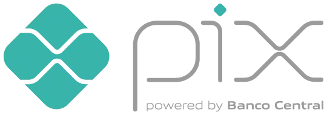

A ACAPRA é uma organização sem fins lucrativos e todo o nosso trabalho depende da generosidade de pessoas como você. Cada doação, seja de tempo, dinheiro ou suprimentos, faz uma enorme diferença na vida de nossos animais. Veja como você pode ajudar:
💰 Faça uma Doação via PIX
A doação em dinheiro é a forma mais rápida e direta de nos ajudar a cobrir custos urgentes como tratamentos veterinários, medicamentos, cirurgias e exames. Qualquer valor é bem-vindo!

Chave PIX (CNPJ):
03.772.251.0001-82
🦴 Doe Ração e Suprimentos
Estamos sempre precisando de itens essenciais para manter nossos animais saudáveis e nosso ambiente limpo. Os itens que mais precisamos são:
- Ração para cães e gatos (filhotes e adultos)
- Areia sanitária para gatos
- Vermífugos e anti-pulgas
- Produtos de limpeza (água sanitária, desinfetante)
- Caminhas, cobertores e toalhas usadas
Entre em contato para saber nossos pontos de coleta!
❤️️ Seja Voluntário
Seu tempo e seu talento são doações preciosas! Estamos sempre em busca de pessoas comprometidas para nos ajudar em diversas frentes:
- Lar Temporário: Acolha um animal em sua casa até que ele seja adotado.
- Eventos: Ajude em nossas feiras de adoção.
- Transporte: Leve animais para consultas e exames.
- Divulgação: Ajude a compartilhar nossos casos nas redes sociais.
Fale Conosco para ser voluntário